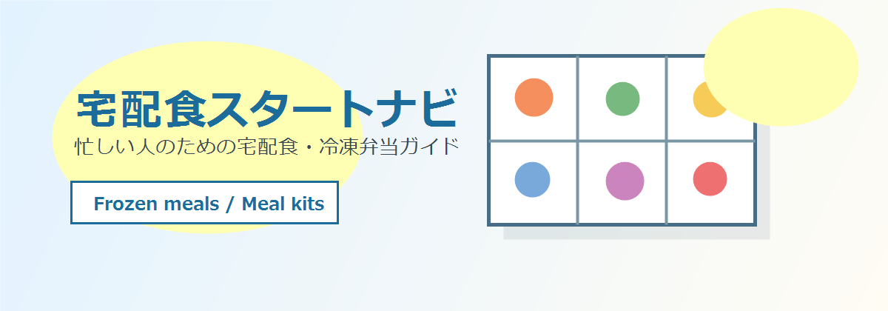

宅配食スタートナビへようこそ
目的別に選ぶ
宅配食は、生活パターンに合わせて選ぶと失敗しにくくなります。
一人暮らし、共働き、冷凍庫の空き、送料、定期便の条件を見ながら、無理なく続けられる選び方を整理しています。

新着記事
おすすめ記事
テーマから探す
宅配食スタートナビへようこそ。
このサイトは、一人暮らし、共働き、仕事や副業で忙しい人が、毎日の食事を少しラクにするための宅配食・冷凍弁当ガイドです。
宅配食は、ただの手抜きではありません。買い物、献立決め、調理、片付けに使っていた時間を減らし、生活の余白を作るための選択肢です。
このサイトで扱うテーマ
・宅配食と冷凍弁当の違い
・一人暮らし向けの選び方
・共働き家庭向けのミールキット活用
・自炊、コンビニ、宅配食の費用比較
・冷凍弁当を選ぶときのチェックポイント
・楽天やAmazonで買える時短食品と便利グッズ
最初から完璧な食生活を目指す必要はありません。まずは、疲れている日だけ宅配食を使う、平日の昼だけ冷凍弁当にする、週2回だけミールキットにする、という使い方で十分です。
このサイトでは、価格だけでなく、保存しやすさ、味の選びやすさ、量、注文のしやすさ、続けやすさも見ながら、初心者が迷いにくい形で整理していきます。
持病や食事制限がある方は、各サービスの公式情報や医師・管理栄養士などの専門家の案内も確認してください。